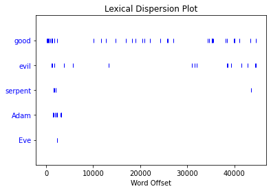

NLTK: nltk.book#
# importing the NLTK library so we can do text analysis
import nltk
# importing a dataset of "books" to get started with text analysis
from nltk.book import *
*** Introductory Examples for the NLTK Book ***
Loading text1, ..., text9 and sent1, ..., sent9
Type the name of the text or sentence to view it.
Type: 'texts()' or 'sents()' to list the materials.
---------------------------------------------------------------------------
LookupError Traceback (most recent call last)
File ~/anaconda3/lib/python3.11/site-packages/nltk/corpus/util.py:84, in LazyCorpusLoader.__load(self)
83 try:
---> 84 root = nltk.data.find(f"{self.subdir}/{zip_name}")
85 except LookupError:
File ~/anaconda3/lib/python3.11/site-packages/nltk/data.py:583, in find(resource_name, paths)
582 resource_not_found = f"\n{sep}\n{msg}\n{sep}\n"
--> 583 raise LookupError(resource_not_found)
LookupError:
**********************************************************************
Resource gutenberg not found.
Please use the NLTK Downloader to obtain the resource:
>>> import nltk
>>> nltk.download('gutenberg')
For more information see: https://www.nltk.org/data.html
Attempted to load corpora/gutenberg.zip/gutenberg/
Searched in:
- '/Users/caladof/nltk_data'
- '/Users/caladof/anaconda3/nltk_data'
- '/Users/caladof/anaconda3/share/nltk_data'
- '/Users/caladof/anaconda3/lib/nltk_data'
- '/usr/share/nltk_data'
- '/usr/local/share/nltk_data'
- '/usr/lib/nltk_data'
- '/usr/local/lib/nltk_data'
**********************************************************************
During handling of the above exception, another exception occurred:
LookupError Traceback (most recent call last)
Cell In[2], line 3
1 # importing a dataset of "books" to get started with text analysis
----> 3 from nltk.book import *
File ~/anaconda3/lib/python3.11/site-packages/nltk/book.py:27
24 print("Type the name of the text or sentence to view it.")
25 print("Type: 'texts()' or 'sents()' to list the materials.")
---> 27 text1 = Text(gutenberg.words("melville-moby_dick.txt"))
28 print("text1:", text1.name)
30 text2 = Text(gutenberg.words("austen-sense.txt"))
File ~/anaconda3/lib/python3.11/site-packages/nltk/corpus/util.py:121, in LazyCorpusLoader.__getattr__(self, attr)
118 if attr == "__bases__":
119 raise AttributeError("LazyCorpusLoader object has no attribute '__bases__'")
--> 121 self.__load()
122 # This looks circular, but its not, since __load() changes our
123 # __class__ to something new:
124 return getattr(self, attr)
File ~/anaconda3/lib/python3.11/site-packages/nltk/corpus/util.py:86, in LazyCorpusLoader.__load(self)
84 root = nltk.data.find(f"{self.subdir}/{zip_name}")
85 except LookupError:
---> 86 raise e
88 # Load the corpus.
89 corpus = self.__reader_cls(root, *self.__args, **self.__kwargs)
File ~/anaconda3/lib/python3.11/site-packages/nltk/corpus/util.py:81, in LazyCorpusLoader.__load(self)
79 else:
80 try:
---> 81 root = nltk.data.find(f"{self.subdir}/{self.__name}")
82 except LookupError as e:
83 try:
File ~/anaconda3/lib/python3.11/site-packages/nltk/data.py:583, in find(resource_name, paths)
581 sep = "*" * 70
582 resource_not_found = f"\n{sep}\n{msg}\n{sep}\n"
--> 583 raise LookupError(resource_not_found)
LookupError:
**********************************************************************
Resource gutenberg not found.
Please use the NLTK Downloader to obtain the resource:
>>> import nltk
>>> nltk.download('gutenberg')
For more information see: https://www.nltk.org/data.html
Attempted to load corpora/gutenberg
Searched in:
- '/Users/caladof/nltk_data'
- '/Users/caladof/anaconda3/nltk_data'
- '/Users/caladof/anaconda3/share/nltk_data'
- '/Users/caladof/anaconda3/lib/nltk_data'
- '/usr/share/nltk_data'
- '/usr/local/share/nltk_data'
- '/usr/lib/nltk_data'
- '/usr/local/lib/nltk_data'
**********************************************************************
# using the method "concordance" to get a view of the contexts surrounding a given word
text5.concordance("man")
Displaying 25 of 39 matches:
i have to go to the docs tomorrow ya man I am too .. Connected to ... Slip awa
U121 . JOIN rethinks ??? lmaoooo Aw , man . whats up U155 i was only kidding .
er yes PART that red color bit my eye man ... . ACTION video tapes . hey U20 Im
that one lol PART I am not a bisexual man , but I am seeking some ( equal oppor
y hater LOL Hi , U3 , do u ever sleep man am I out in left field tonight ... so
work Hi U30 I see PART hi U19 bored ? man the day is slipping away do something
ature ouch U34 lol there a story of a man name brady who had 12 kids out of wed
t http://www.shadowbots.com OOH DAamn man i 'm , such a sucka :) whats not to l
rts ? LoL moped U28 ?.. ohh ur a real man i had a moped once yup hehe U16 :) th
PART from azerbaijan dang thats cold man i syck who wanna chatr (((((((( neone
ere attracted to the same sex JOIN oh man , they just xxxed it muh nose is cold
!! hi U33 hugs JOIN U33 hiiii U26 U26 man , where has the U26 man gone ? hi U35
hiiii U26 U26 man , where has the U26 man gone ? hi U35 hi U16 , hi U14 howdy U
im , lol hey U19 lol i think of macho man i think of the village people lol (((
to ((( U21 )))) but can you tell if a man is good looking or not U16 ? . ACTION
aint no such a thang as a good lookin man lol hi U27 JOIN lmao well .... cepn f
t the end he knew was romantic with a man say no lol U34 lol go Cardinals !! ya
nks U50 you need naked ? hiya U53 :-) man U37 , one hour ago I said Hello to yo
specalily love the music JOIN ...... man my spelling sucks today PART mine too
're so hot U66 . U119 . JOIN JOIN oh man wish i was you . then i wouldnt have
e ur gay . PART PART . ACTION = U58 . Man shouldnt have walked away from the co
-...)...- S.M.R. <3 . JOIN JOIN PART Man im bored . My short attention span ha
minutes / seconds . it 's my Music . Man i hate pop up adds . they keep blocki
hower any ladies want chat / single / man / 35 / New York can pm me JOIN brb JO
it though the girls here are on heat man im a virgin I am laughing so hard elb
# checking the concordance for 'woman'
text5.concordance("woman")
Displaying 6 of 6 matches:
etshybbw ?? lol U47 stand yer ground woman !!! i just saw shaun of the dead ..
was horrible lol U28 .. control your woman ! JOIN u dont want to live at all ju
n is ready U132 : Are you a man or a woman ? that depends if neysa 's cooking i
!!!! aloha morning ciao hello eskimo woman whatever else it is to you people lo
get a pro U7 , why bother and a real woman never asks been there plenaty of tim
Z THAT IT JUST SHOWS YOUR NOT MAN OR WOMAN ENOUGH . Hey any guy want to talk ab
# using the 'similar' method to check for words that have common contexts
text5.similar("man")
girl gay part hey ah nick do ok yes male no how oh k jerk was sex yea
leave life
text5.similar("woman")
ugly teacher tongue mistake virgin
# the word 'ugly' has a common context with the word 'woman'
text5.concordance('ugly')
# using the 'dispersion_plot' method to see where words
# appear across the text
text3.dispersion_plot(['good', 'evil', 'serpent', 'Adam', 'Eve'])
